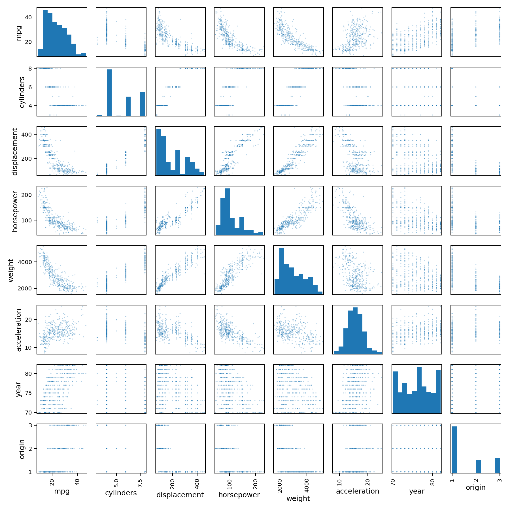

代码 3.7-04 · 第 9 题：散点矩阵与相关矩阵
按完整 Notebook 的顺序运行；本块可能依赖前面的变量。3.6—3.7包含教材真实数据与模拟实验；全样本统计分析不等于独立测试评估。
逐步读代码
select_dtypes按数据类型选列，字符串name不参与数值相关；散点矩阵对角线用直方图，其他位置是两两散点。corr()默认计算Pearson相关系数。origin虽以数字编码，本质是类别；本题先遵循教材的数值主效应设定，业务解释时不能忽略编码含义。
实际运行输出
mpg cylinders displacement horsepower weight acceleration year origin mpg 1.000 -0.778 -0.805 -0.778 -0.832 0.423 0.581 0.565 cylinders -0.778 1.000 0.951 0.843 0.898 -0.505 -0.346 -0.569 displacement -0.805 0.951 1.000 0.897 0.933 -0.544 -0.370 -0.615 horsepower -0.778 0.843 0.897 1.000 0.865 -0.689 -0.416 -0.455 weight -0.832 0.898 0.933 0.865 1.000 -0.417 -0.309 -0.585 acceleration 0.423 -0.505 -0.544 -0.689 -0.417 1.000 0.290 0.213 year 0.581 -0.346 -0.370 -0.416 -0.309 0.290 1.000 0.182 origin 0.565 -0.569 -0.615 -0.455 -0.585 0.213 0.182 1.000
